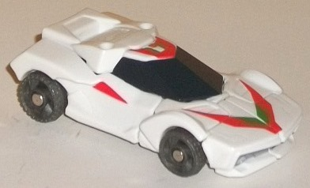
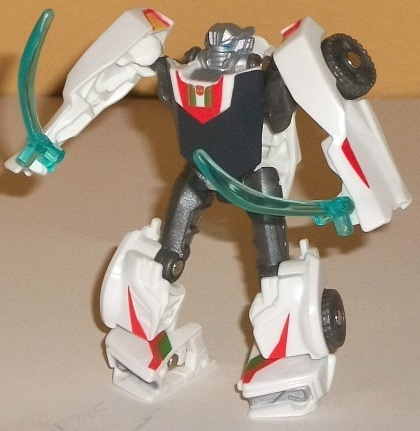
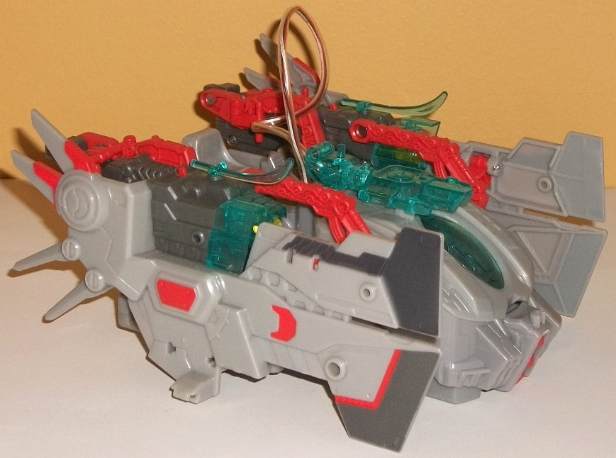
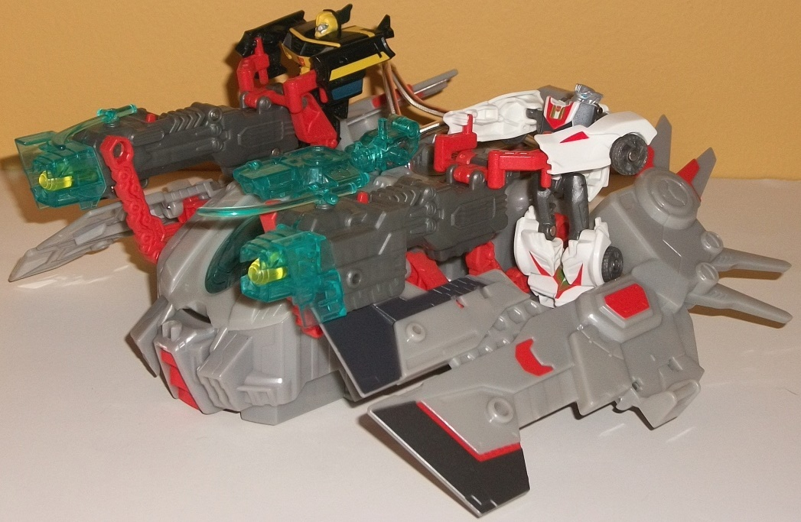

Allegiance
: Autobot
Size
: Cyberverse Vehicle Set
Difficulty of Transformation to Robot
:
Very Easy
Difficulty of Transformation of Vehicle
:
Very Easy
Color Scheme
: White, moderately
dark milky gray, light milky gray, light pale red, transparent aqumarine,
and some dull yellow, dull dark metallic gunmetal gray, moderately light
red, silver, black, light metallic silvery blue, and dark green
Figure Rating
: 8.6
Vehicle-Base Rating
: 8.4


Wheeljack's car mode
is replicated very well at the Legion-class scale, looking quite accurate
to the show model (with the only real exception being that his spoiler
and some details on his back area are a bit more rounded off than in the
show). Proportions-wise he's great in this mode, and hey, he even has an
actual front bumper here, unlike his
deluxe
toy
. His back end has a LITTLE gap in it at the bottom, but that's
pretty minor-- considering the small size of this toy, it's rarely noticeable.
Another minor issue is that his roof is a bit overly small compared to
his windows, due to the chest not being able to compress because of the
size. Wheeljack's angular bits with relatively minimal mold detailing are
replicated here, and surprisingly, he has nearly all of the paint apps
on this version that he does in car mode on his larger deluxe version!
His Wheeljack-esque angular green-and-red designs on his front hood, roof,
and the little red triangles on the sides are all present. His taillights
are painted yellow and red, and his front bumper silver. His windows are
also painted a flat black, which fits how it looks in the show pretty well.
All of this means that this is quite a detailed car mode in an age when
a complete set of paint apps on a toy this small are a rarity. The green,
red, and black also all contrast excellently against the predominantly
white plastic in this mode, and the overall color scheme is definitely
Wheeljack. Wheeljack has two ports in this mode for holding Cyberverse-scaled
weapons-- both of them are on the sides of his roof, slightly behind the
windows.
In robot mode, Wheeljack
also resembles his general design quite well for the size, though it's
not as on-point as his vehicle mode is. His legs look perfect, what with
the front bits of the vehicle folding up to form his feet. His chest is
also fairly proportional-- though again, the "chest" part is a bit small
compared to the windows on his lower abdomen. His arms are the weak link
in this mode-- as you'd expect from a sportscar Legion figure, they're
simply made up of the car doors of the vehicle mode, with the robot hands
molded inside. That said, the taillights on the shoulders help to add a
bit more show-accurate bulk to them, and although it's simplified on this
toy, this part of the transformation IS show-accurate. Beyond the car-door
arms, there isn't any other vehicle mode kibble in this mode-- the roof
forms behind his back quite nicely, and it neither sticks out too much
nor impedes movement. Another color makes itself known in this mode-- namely,
a milky shade of gray. Thankfully, it's a dark enough shade of the color
where it doesn't look overly bland like the oft-used light milky gray color,
and it helps to add a little more variety to Wheeljack's already varied
color scheme. The sculpting on this toy is also well-done, with appropriate
details like his front grill, wheels, and head all sculpted quite accurately,
given the scale. His head is also accurately painted silver with blue optics
and looks great, if a bit "stubby" because of the size and paint on it.
For movement, Wheeljack can move at the shoulders, hips, knees, and ankles,
with the former two on ball joints. Thus, he's quite poseable for a Legion
toy, what with the knees and large adjustable feet to keep him stable.
Both of Wheeljack's hands have been molded in this mode to hold Cyberverse-scaled
weapons, though the ports from vehicle mode are now on his back and can
be used for "extra storage".\


Wheeljack's "Star Hammer",
like the other Prime Cyberverse vehicle playsets, has a vehicle mode and
a "base" mode. Of one note upfront is that it's likely called the "Star
Hammer" for copyright reasons, as in the show, it's referred to by the
much-cooler and fitting name "Jack Hammer". When it comes to the general
proportions and look of the Star/Jack Hammer's vehicle mode, it's amazing
how close to the show model it looks. The wings are proportionate, all
the necessary mold details are present to make it spot-on with the show
model, it's got two spring-loaded missile-firing cannons on the side, inside
the wings (press the red trigger in the middle of each cannon to fire the
missiles, which are oddly translucent green), and it's more-or-less in
scale with Cyberverse figures, to boot! The only real obvious "extras"
here are the bits required for the transformation and light piping gimmick,
such as the guns being a bit further back and further up then they are
in the show. Obviously there isn't a big cord in the middle of the mode
that leads to a transparent blue weapon on top of the cockpit, either.
Speaking of the light piping gimmick, by pressing down on the Autobot symbol
on the top of the craft and a bit towards the rear, this will cause the
connected transparent blue piece to light up a green color-- at least partially.
As is the case with nearly all of these LED "light-up" gimmicks in the
Prime toyline, it doesn't work that well. However, the piece that generates
the green light can be detached from the weapon on top of the cockpit and
affixed to the back of either of the missile launchers (where the light
piping doesn't work AT ALL), on the back of either of the small transparent
Wheeljack swords that come with this set as well as other Cyberverse-scale
weapons, or it can be attached to the upper back of the 2012 Cyberverse
Commander-class figures to try to light them up, with medicore results
on the best of them and non-existent results in the worst cases. The color
scheme used on this set is my only real issue with it, at least in this
mode-- nearly all of the plastic is a light milky gray that looks exceedingly
dull. Even a LITTLE bit of silver paint would've really spiced things up,
but the main secondary color here is a rather light shade of red. If it
was a darker shade, it would've helped with the contrast here, but as is,
only the dark gray portions of the side guns and the paint on the wing
tips really provide all of these light colors with any sort of balance.
I really think the Jack Hammer should look a lot better than this in terms
of colors and paint apps. Oh, and in case you're wondering, Wheeljack can
indeed fit inside the cockpit, which opens up. It's large enough where
any Cyberverse figure should fit in there, really, so it's not a tight
fit at all. I wish the window was a little bigger so you could see him
inside there better, though...
The Star Hammer's transformation
to "base mode" simply involves pushing back on the slider at the back end
of the vehicle. This makes both the wings fold downwards and outwards,
revealing larger side platforms, while the two side guns pivot forward.
To be sure, it still looks more like a vehicle than a base here, but it
does give Cyberverse-scale figures a bit more room to stand behind the
side cannons, given the larger, less hidden platforms here. Flip-out handles
allow figures to "man" both guns, and there's TONS of ports throughout
the mode, both for Cyberverse-scaled weapons and a few for "regular"-sized
Prime weapons, as well, so you can really arm up Wheeljack's ship. There's
also clip points on each side of this mode to allow it to connect to other
Cyberverse vehicle sets to make a larger "base", if you so desire.
The Wheeljack/Star Hammer set is one of the more impressive Cyberverse vehicle sets out there. Wheeljack is a pretty solid little Legion figure and accurately represents the character. The Star Hammer set has an overly simple transformation and somewhat iffy "base" mode, but it's still better than most other Cyberverse playsets' base modes and the simplicity is sort of a selling point for these sets. I do really wish the Star Hammer had been given some more metallic colors and more paint apps, though, since not does it look more boring than it should, but there's tons of nice show-accurate little mold details on this toy just begging to be highlighted. Still, it's got a solid gimmick, an openable cockpit, two big ol' missile launchers, and tons of ports to pump up the weapon count even further-- recommended, if you like the Star/Jack Hammer design.
Review by Beastbot